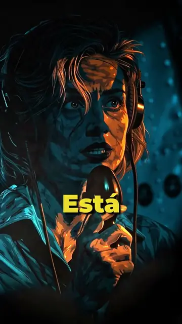
Short · 9:16NOC_011_EARHART.mov
La escucharon desaparecer en directo: Amelia Earhart
Misterio real · Narrativa
Edición, diseño y narrativa visual para piezas que buscan algo más que mantener la atención.
Shorts recientes para Nocturnario: historias reales y misterio. Pasa el cursor por cada uno para recorrerlo como en una línea de tiempo; haz clic para verlo aquí mismo.

Short · 9:16Misterio real · Narrativa
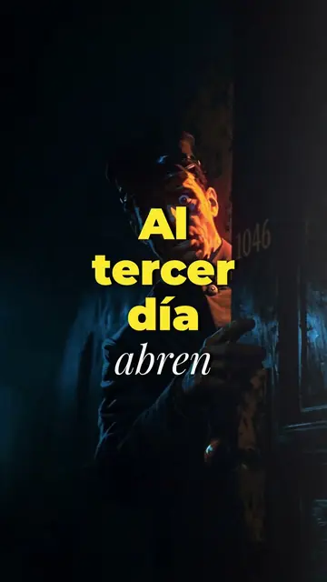
Short · 9:16Terror · Relato
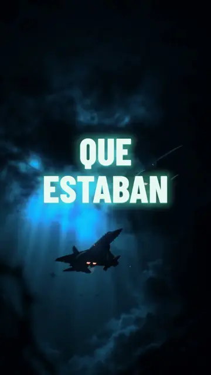
Short · 9:16Misterio · Aviación
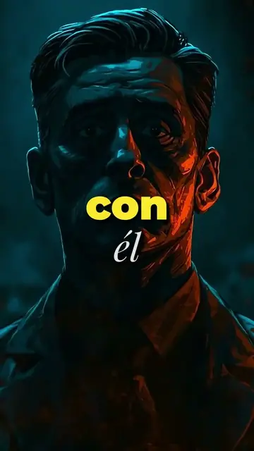
Short · 9:16Misterio · Relato
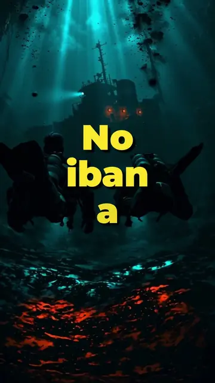
Short · 9:16Historia real · Suspense
Cada historia tiene una puerta. Mi trabajo es encontrarla: el plano que respira, el corte que llega justo a tiempo, el color que te lleva a un lugar donde nunca has estado. El montaje no rellena una historia. La revela.
— LuminaHecho
Un proceso completo para crear vídeos que se ven bien, se entienden y mantienen la atención. Cada servicio es una pista de la misma línea de tiempo.
Estructura, selección de planos y ritmo para YouTube, Shorts, documentales, entrevistas y campañas.
Títulos, grafismo, animaciones y sistemas visuales que dan identidad y claridad al contenido.
Color, diseño sonoro, limpieza de audio, subtítulos y entregas adaptadas a cada plataforma.
Cuatro marcas en la línea de tiempo, de la primera conversación al master final.
Objetivo, audiencia, referencias, material disponible y formato de entrega.
La historia toma forma: estructura, selección, ritmo y dirección visual.
Feedback ordenado, ajustes concretos y una comunicación sin fricción.
Exportaciones optimizadas, formatos sociales y archivos listos para publicar.
El mismo imaginario que da forma a @luminah_echo: figuras solitarias, puertas sobre el mar y soles que parten muros.
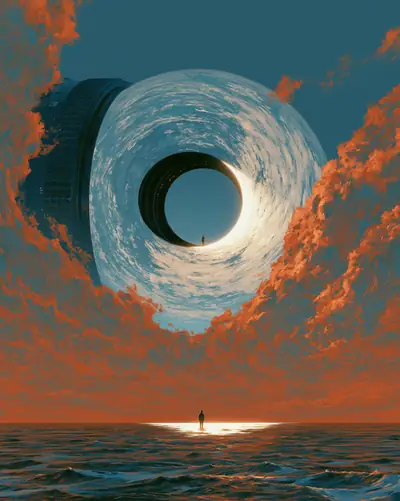
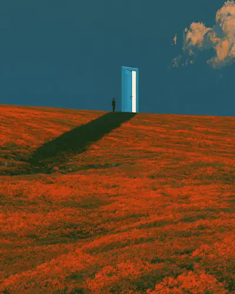
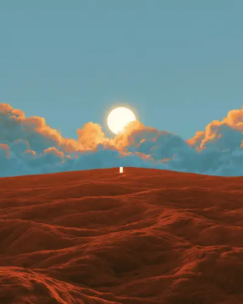
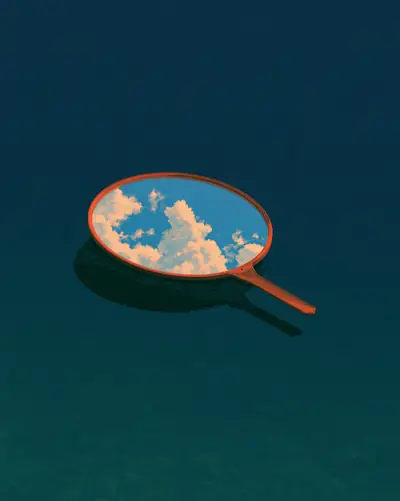
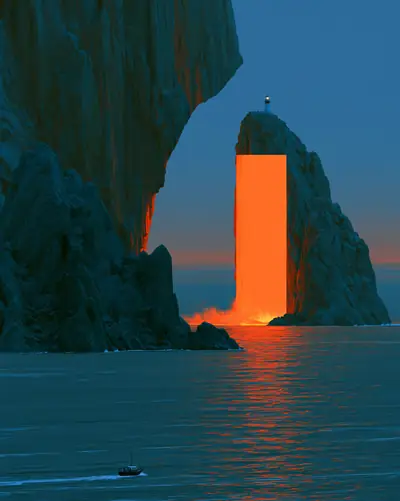
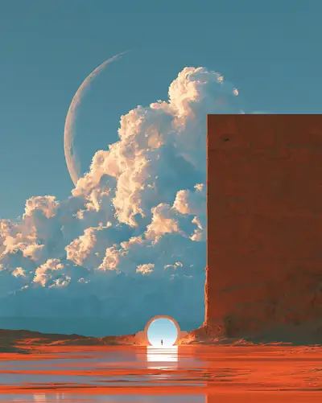
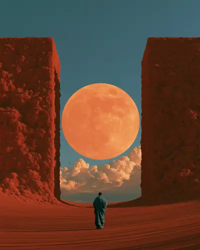
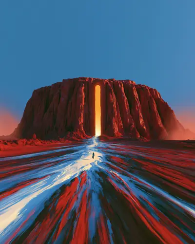
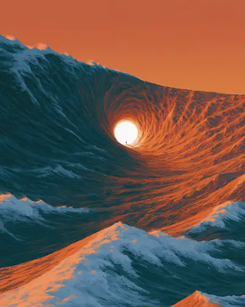
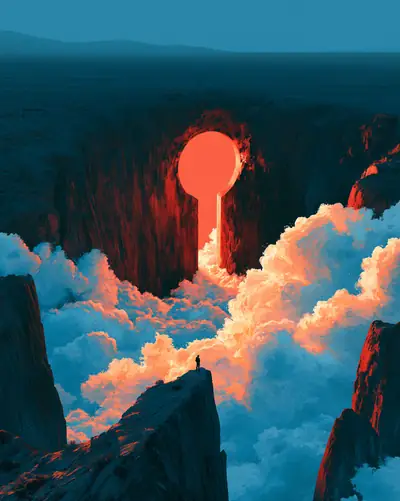
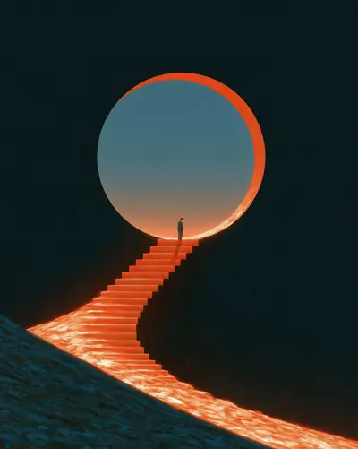
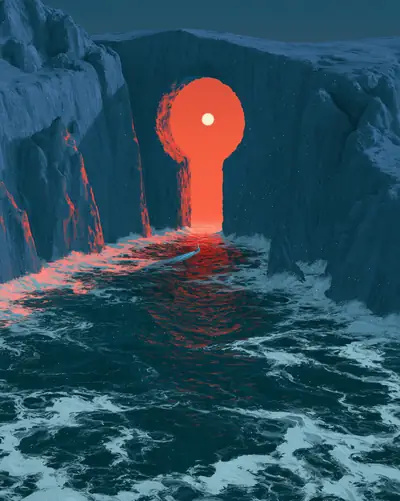
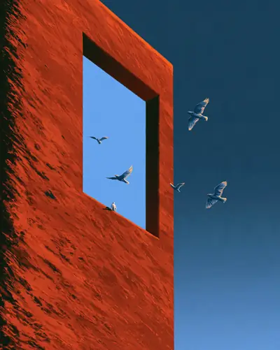
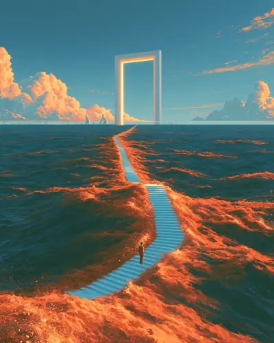
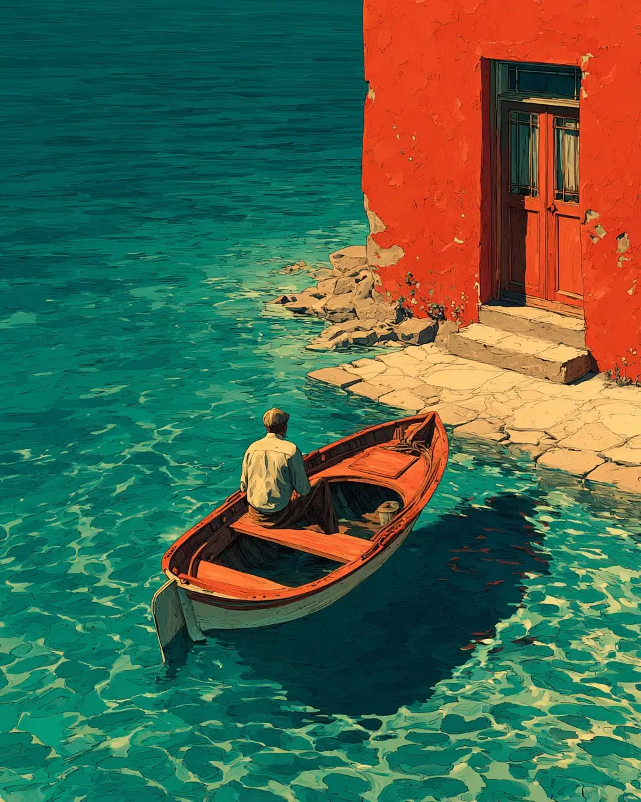
Soy Javier, editor de vídeo y creador de LuminaHecho. Trabajo cada pieza desde la narrativa y el diseño para encontrar el tono, el ritmo y la forma que mejor sirven al mensaje.
En @luminah_echo exploro un universo propio de agua, luz y umbrales. Esa misma sensibilidad es la que llevo a cada proyecto de edición.
Cuéntame qué estás creando, en qué punto se encuentra y qué necesitas. Responderé con los siguientes pasos.